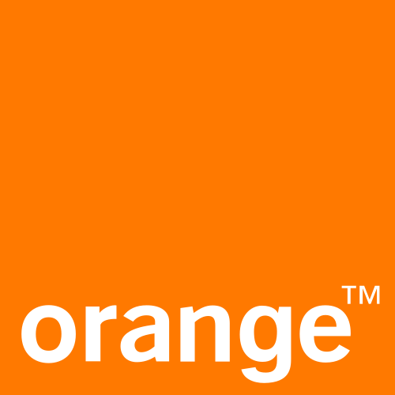

Alternant R&T
Youenn
Meillarec
Assistant Ingénieur Réseaux & Innovation
"De la virtualisation des réseaux IP à l'automatisation des infrastructures chez Orange Innovation."
Ce portfolio retrace mon parcours d'alternance en BUT R&T au sein d'Orange Innovation. Il documente l'acquisition progressive des compétences du référentiel, analyse mes missions significatives et présente ma projection professionnelle vers le métier d'Ingénieur NetDevOps.
